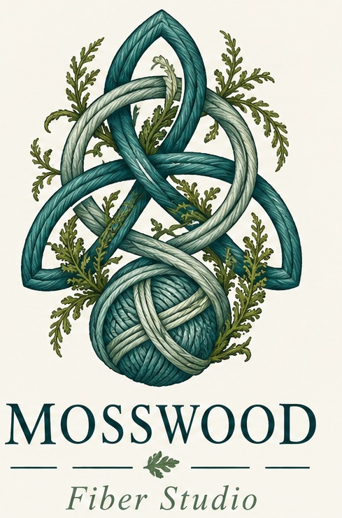
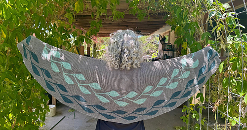

Hands-on depth
Knitting, crochet, weaving, spinning, silkworm rearing, and silk reeling all inform the work.
Knitting instruction and fiber arts
Mosswood Fiber Studio brings more than 30 years of fiber arts experience to welcoming classes that help knitters understand the why behind every stitch.
Knitting, crochet, weaving, spinning, silkworm rearing, and silk reeling all inform the work.
Teaching in the Society for Creative Anachronism and at local fiber festivals grounds each class in textile tradition.
Classes focus on muscle memory, pattern reading, troubleshooting, and creative exploration.
From true-beginner basics to cables and stranded colorwork, classes are structured to meet students where they are and give them skills they can use long after class ends.
View upcoming classes
Browse finished objects, teaching samples, swatches, and studio experiments. Project photos can be added as the collection grows.
Visit the gallery
Explore pattern suggestions organized by technique, including cabling, shaping, and colorwork, with space for notes about why each pattern helps.
Browse recommended patternsA growing list of knitting and fiber arts books I recommend for technique, inspiration, and deeper understanding. Some book links may be affiliate links.
Browse book recommendations